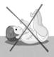

RÉSUMÉ DES CARACTÉRISTIQUES DU PRODUIT
ANSM - Mis à jour le : 06/08/2014
UVESTEROL D 5000 UI/ml, solution buvable
2. COMPOSITION QUALITATIVE ET QUANTITATIVE
Ergocalciférol (vitamine D2) ............................................................................................................ 0,00125 g
Pour un flacon de 10 ml
1 ml = 5 000 UI de vitamine D.
1 UI = 0,025 µg d’ergocalciférol.
Une dose n°L contient 0,16 ml de solution correspondant à 800 UI d'ergocalciférol.
Une dose n°1 contient 0,20 ml de solution correspondant à 1 000 UI d'ergocalciférol.
Une dose n°2 contient 0,30 ml de solution correspondant à 1 500 UI d'ergocalciférol.
Pour la liste complète des excipients, voir rubrique 6.1.
Solution buvable.
Solution incolore à jaunâtre, limpide à légèrement opalescente avec une odeur de fruits rouges.
4.1. Indications thérapeutiques
Prévention et traitement de la carence en vitamine D chez le nouveau-né, le nourrisson et l'enfant jusqu'à cinq ans, la femme enceinte ou qui allaite et le sujet âgé.
4.2. Posologie et mode d'administration
Posologie
Chez le nouveau-né, le nourrisson et l'enfant jusqu'à 5 ans: l'apport doit tenir compte de l'alimentation du nourrisson :
· Si le lait est enrichi en vitamine D: 800 à 1000 UI/j soit une dose L à une dose n°1 par jour.
· Si le lait n’est pas enrichi en vitamine D: 1000 à 1500UI/j soit une dose n°1 à une dose n°2 par jour.
Chez la femme enceinte: 1 000 UI par jour, soit une dose n°1 par jour, pendant le dernier trimestre de la grossesse.
Chez la femme qui allaite: 800 à 1 000 UI par jour, soit une dose L à une dose n°1 par jour, en période hivernale ou en cas de non exposition solaire. Cet apport couvre les besoins de la mère mais pas ceux de son enfant.
Chez le sujet âgé: 800 à 2 000 UI par jour, soit une dose L à deux doses n°1 par jour.
Mode d'administration chez le nouveau-né à terme et le nourrisson
Afin de limiter le risque de fausse route lors de l'administration du produit, il est particulièrement important de suivre scrupuleusement le mode d'administration du produit :
· Toujours administrer le produit avant la tétée ou le biberon.
· Utiliser exclusivement la pipette doseuse pour administration orale fournie dans la boîte :
(SERINGOUTTE)
· Prélever à l’aide de la pipette (SERINGOUTTE) la dose prescrite.
· Prendre l’enfant éveillé, l’installer en position semi-assise au creux du bras, la tête reposée sur le bras :

· Introduire la pipette à environ 1 cm dans la bouche et la placer contre l’intérieur de la joue :
Laisser téter l’enfant, puis lui donner le sein ou le biberon. Si l’enfant ne tète pas, appuyer très lentement sur le piston de la pipette afin que le produit s’écoule goutte à goutte dans la bouche, puis lui donner le sein ou le biberon.
· Ne pas allonger l’enfant immédiatement après l’administration.
· Rincer la pipette (SERINGOUTTE) à l’eau après chaque utilisation.
La solution étant aqueuse, elle peut être administrée dans un biberon de faible volume avant la tétée.
En cas de reflux gastro-oesophagien, de problèmes digestifs ou de troubles de la déglutition :
Ne pas administrer pur, mais dans une tétine adaptée à l’enfant après dilution dans un petit volume d'eau ou de lait (environ 2 mL).
Laisser l’enfant téter doucement la tétine, et lui retirer la tétine une fois vide, puis lui donner le sein ou le biberon. Rincer la tétine à l’eau après chaque utilisation.
· Hypersensibilité à la substance active ou à l’un des excipients mentionnés à la rubrique 6.1
· Hypercalcémie
· Hypercalciurie
· Lithiase calcique
4.4. Mises en garde spéciales et précautions d'emploi
Des cas de fausse route ou de malaise avec apnée pouvant entraîner une cyanose ont été rapportés chez des nouveau-nés et des nourrissons, sans pathologie connue, lors de l'administration de l'UVESTEROL D et ce, notamment au cours du premier mois de vie (voir rubrique 4.8).
Par conséquent, afin de limiter ce risque, l'administration de l'Uvestérol D à des nourrissons doit s'effectuer en respectant scrupuleusement le protocole d'administration du produit détaillé en rubrique 4.2.
En cas de reflux gastro-oesophagien, de problèmes digestifs ou de troubles de la déglutition, ne pas administrer pur, mais dans une tétine adaptée à l’enfant après dilution dans 2 ml d'eau ou de lait selon le mode d'allaitement préconisé (voir rubrique 4.2).
La vitamine D est présente dans de nombreux médicaments et dans de nombreux laits pour nouveau-nés et nourrissons.
Pour éviter tout surdosage, susceptible d'entraîner des effets indésirables graves, tenir compte des doses totales de vitamine D en cas d'association avec un traitement contenant déjà cette vitamine ou en cas d'utilisation de lait supplémenté en vitamine D.
En cas d’apport en calcium, un contrôle régulier de la calciurie est indispensable.
4.5. Interactions avec d'autres médicaments et autres formes d'interactions
A prendre en compte
+ ORLISTAT
Diminution de l'absorption de la vitamine D.
Il n'y a pas d'étude de tératogenèse disponible chez l'animal.
En clinique, un recul important semble exclure un effet malformatif ou fœtotoxique de la vitamine D.
En conséquence, la vitamine D, dans les conditions normales d'utilisation, peut être prescrite pendant la grossesse.
La vitamine D peut être prescrite pendant l'allaitement.
4.7. Effets sur l'aptitude à conduire des véhicules et à utiliser des machines
UVESTEROL D n’a aucun effet ou qu’un effet négligeable sur l’aptitude à conduire des véhicules et à utiliser des machines.
Des cas de malaise vagal (apnée du nourrisson) et des cas de fausses routes ont été rapportés chez des nouveau-nés et des nourrissons, sans pathologie connue, âgés notamment de moins de 1 mois lors de l'administration de l’UVESTEROL D. La cause de ces cas n'a pas été clairement établie à ce jour (voir rubriques 4.2 et 4.4).
Déclaration des effets secondaires
La déclaration des effets indésirables suspectés après autorisation du médicament est importante. Elle permet une surveillance continue du rapport bénéfice/risque du médicament. Les professionnels de santé déclarent tout effet indésirable suspecté via le système national de déclaration : Agence nationale de sécurité du médicament et des produits de santé (ANSM) et réseau des Centres Régionaux de Pharmacovigilance - Site internet: www.ansm.sante.fr.
Signes cliniques :
· céphalées, asthénie, anorexie, amaigrissement, arrêt de croissance,
· nausées, vomissements,
· polyurie, polydipsie, déshydratation,
· hypertension artérielle,
· lithiase calcique, calcifications tissulaires, en particulier rénales et vasculaires, insuffisance rénale.
Signes biologiques :
· hypercalcémie, hypercalciurie, hyperphosphatémie, hyperphosphaturie.
Conduite à tenir :
Cesser l'administration de ce médicament, réduire les apports calciques, augmenter la diurèse par des boissons abondantes.
5. PROPRIETES PHARMACOLOGIQUES
5.1. Propriétés pharmacodynamiques
Classe pharmacothérapeutique: VITAMINE D, Classe ATC : A11CC01
La vitamine D est une vitamine liposoluble. Elle exerce un rôle essentiel sur l'intestin, dont elle augmente la capacité à absorber le calcium et les phosphates et elle favorise la minéralisation du squelette, grâce à ses actions directes sur l'os en formation et à ses actions indirectes impliquant l'intestin, les parathyroïdes et l'os déjà minéralisé.
5.2. Propriétés pharmacocinétiques
La vitamine D est absorbée dans l'intestin grêle de façon passive, puis rejoint la circulation générale par voie lymphatique, incorporée aux chylomicrons.
Après absorption, elle se lie à une protéine porteuse spécifique et est transportée jusqu'au foie pour y être convertie en 25-hydroxyvitamine D. Cette dernière se lie à son tour à la même protéine porteuse et est transportée jusqu'aux reins ou elle est transformée en sa forme active, la 1,25-dihydroxyvitamine D.
Ses sites de stockage essentiels sont le tissu adipeux, les muscles, mais aussi le sang. La 25 hydroxyvitamine D liée à sa protéine porteuse est la forme majeure de réserve circulante de la vitamine D. Sa demi-vie dans le sang est de 15 à 40 jours.
L'élimination de la vitamine D et de ses métabolites se fait par voie fécale, sous forme non transformée ou sous forme hydrosoluble (acide calcitroïque, dérivés glycuroconjugués).
5.3. Données de sécurité préclinique
Sans objet.
Gallate de propyle, arôme fruits rouges (substances aromatisantes naturelles, préparations aromatisantes, propylèneglycol, eau), édétate disodique, acide citrique anhydre, phosphate disodique dodécahydraté, sorbate de potassium, saccharine sodique, polysorbate 80, propylèneglycol, glycérol à 85 pour cent, hydroxyde de sodium, eau purifiée.
Sans objet.
18 mois.
6.4. Précautions particulières de conservation
A conserver à une température ne dépassant pas 25°C et à l’abri de la lumière.
6.5. Nature et contenu de l'emballage extérieur
Pipette doseuse pour administration orale composée d'un piston gradué (en polystyrène) et d'une pipette ou corps (en polyéthylène basse densité).
6.6. Précautions particulières d’élimination et de manipulation
Pas d'exigences particulières.
7. TITULAIRE DE L’AUTORISATION DE MISE SUR LE MARCHE
Laboratoires CRINEX
3, rue de Gentilly
BP 337
92541 Montrouge Cedex
8. NUMERO(S) D’AUTORISATION DE MISE SUR LE MARCHE
9. DATE DE PREMIERE AUTORISATION/DE RENOUVELLEMENT DE L’AUTORISATION
[à compléter ultérieurement par le titulaire]
10. DATE DE MISE A JOUR DU TEXTE
[à compléter ultérieurement par le titulaire]
Sans objet.
12. INSTRUCTIONS POUR LA PREPARATION DES RADIOPHARMACEUTIQUES
Sans objet.
Médicament non soumis à prescription médicale.